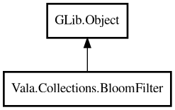

BloomFilter
Object Hierarchy:

Description:
public class BloomFilter<T> : Object
Probabilistic membership filter with no false negatives.
Content:
Creation methods:
Methods:
- public void add (T item)
Adds one item to filter.
- public void addAll (ArrayList<T> items)
Adds multiple items.
- public int bitSize ()
Returns total bit size.
- public void clear ()
Clears all bits.
- public double estimatedFalsePositiveRate ()
Returns estimated false-positive rate.
- public BloomFilter<T>? fromBytes (uint8[] bytes)
Restores filter from serialized bytes.
- public int hashCount ()
Returns number of hash functions.
- public bool merge (BloomFilter<T> other)
Merges another filter into this filter.
- public bool mightContain (T item)
Returns whether item might be contained in filter.
- public uint8[] toBytes ()
Serializes filter to bytes.
Inherited Members:
All known members inherited from class GLib.Object
- @get
- @new
- @ref
- @set
- add_toggle_ref
- add_weak_pointer
- bind_property
- connect
- constructed
- disconnect
- dispose
- dup_data
- dup_qdata
- force_floating
- freeze_notify
- get_class
- get_data
- get_property
- get_qdata
- get_type
- getv
- interface_find_property
- interface_install_property
- interface_list_properties
- is_floating
- new_valist
- new_with_properties
- newv
- notify
- notify_property
- ref_count
- ref_sink
- remove_toggle_ref
- remove_weak_pointer
- replace_data
- replace_qdata
- set_data
- set_data_full
- set_property
- set_qdata
- set_qdata_full
- set_valist
- setv
- steal_data
- steal_qdata
- thaw_notify
- unref
- watch_closure
- weak_ref
- weak_unref